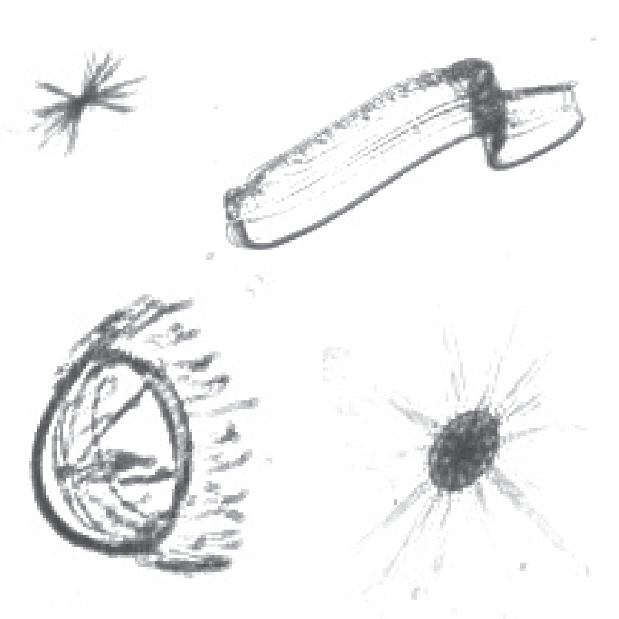
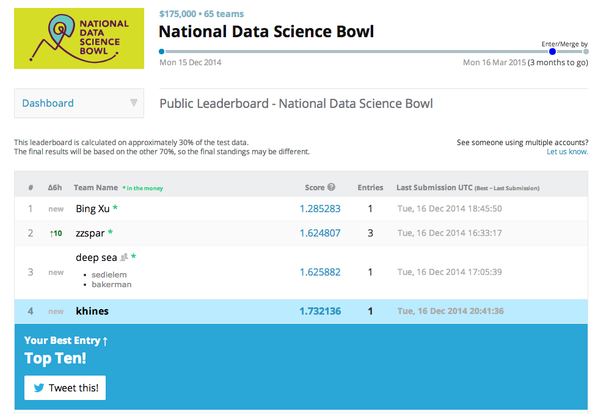

On Plankton and Deep Learning
The inaugural Data Science Bowl is a new Kaggle competition sponsored by Booz Allen Hamilton. Like many of the data science competitions at Kaggle, this one comes with a cash prize for the winner(s). Unlike many Kaggle competitions, this cash prize is particularly large (in excess of $100K) and presumably that's where B.A.H. comes in. In addition, this competition boasts a flavor of "data science for the good of the planet" since the data in question come from an oceanography survey from the Oregon State University Marine Science Center. I tried my hand at this competition, not hoping to win the big bucks, but more as an excuse to gain some mastery of Deep Learning and image processing.
As I mentioned, the data at hand come from an oceanography effort at OSU Marine Science Center aimed at quantifying and tracking the abundance of various species of plankton. As far as I understand it (and this is probably pretty wrong), they drove a boat around with an array of underwater cameras and took pictures of everything. The result is a huge amount of image data containing hundreds of different species of plankton. Below are some example images of a few species of plankton.
Some gnarly looking beasts, if we're being honest. So while above we see four plankton species, in total there are over 100 different species. But most importantly, the total number of images that were captured in this expedition is huge: 50 million images totalling more than 80 terabytes of data. This is far too much data for humans to process and analyze. According to the website, "...the data collected over one day takes one year to manually analyze!" So while it is great that the imaging technology exists to gather large amounts of data, that data is almost uselessly large unless we can come up with automated ways to analyze it. The data science task is then one of image classification: can we come up with an algorithm that can process images of these little beasts and correctly classify their species? And can this algorithm do at least as well as a typical human who receives a little training?
Image classification can be attacked from a number of angles, and the folks at Booz and Kaggle wrote up a really nice tutorial on getting started with image processing. This nice walk-through describes some simple statistical models we might build out of some simple features we could extract from the images. But deep learning is what all the cool kids are talking about, and I knew this what the best-of-the-best were going to be throwing at this competition, so I figured I might as well gain some experience in this area.
Disclaimer - I have no background in image processing. I come from a world of Bayesian networks, latent variable models, time series analysis and so on. While I've discovered that there's been success in bringing Bayesian methods to image problems (like Gibbs sampling RBMs), I've just simply never put much thought in to the problem of modeling the statistical properties of natural images. But I was able to get up to speed pretty quickly thanks to the deep learning tutorials. These tutorials do a nice job of building upon basic knowledge of statistical models and simple neural networks to generalize how such things are combined in layers. Additionally, these provide a nice introduction to Theano, a Python library that allows one to easily compile abstracted mathematical relationships into efficient CPU or GPU implementations.
In the case of image classification, I'd say the most important new idea I encountered is that of Convolutional Neural Networks. I'll not belabor a detailed explanation since there's a nice one here, but I just want to summarize the basic idea since it seems to agree well with general intuition. With neural networks, we have some input of N dimensions and we want to find some N-dimensional filter weights that describe how to the input is related to the output, or to the next layer in a deep neural network. However, in many natural signals (including images) we have a great deal of prior information about those filters which will help us out greatly. In particular, we know our signals likely have important correlation and structure. In the case of images, this means that a given pixel is probably pretty correlated with the pixels surrounding it, but probably not correlated with pixels far away. This leads to the idea of convulutional filters. Our filters are little square or rectangular patches that consider simultaneously only a small number of pixels which are all close to each other. This, as it turns out, is a really useful way to think about images and it captures many of important properties of natural scenes and objects. Additionally, when combined into layers, these convolutional filters gain us important things such as translation invariance, scale invariance, and rotation invariance. And this simple idea (which to me seems very intuitive) has led to huge leaps in state-of-the-art algorithms for image processing.
So back to the plankton. I used the convolutional neural networks just described in order to classify each of the plankton images into one of ~100 different species categories. I'll post my code soon for all the details [Update: code is below], but the architecture was roughly: a convolutional layer feeding into a pooling layer feeding into another convolutional layer feeding into another pooling layer feeding into a fully-connected layer feeding into a linear output layer with ~100 output dimensions. (I gotta figure out how to draw those nice Krizhevsky diagrams...) And I used Theano to take advantge of the modest GPU on my Macbook Pro, allowing all the training to be done in under and hour. On my first attempt, I did pretty well, considering I don't know what I'm doing (see Disclaimer above). Below is a screenshot of the Kaggle leaderboard after my first submission (just to keep me honest).
This was early on in the competition, but I got in the top 5 and am amongst good company with folks who really know what they're doing with this stuff. I tweaked various parameters and architectures for a few weeks and bounced around in the top ten, but eventually, the seasoned pros got better at a much faster rate than I did. I found that I ran into a problem of overfitting which seems to be a basic problem in the field (lots of free parameters after all) and a great deal of skill and experience comes into play when you know how to address these issues. Most commonly, we can 'create' more data with various data augmentation methods (see here and here for example discussions). This allows us to avoid overfitting and also to have enough data to train deeper networks and do much better overall. I never got around to messing much with data augmentation, but that seems to be the key to really pushing things forward.
At any rate, I learned a great deal about convolutional nets and deep learning, and have gained some insight into the promise and limitations of these methods. The leaders in the Kaggle competition are doing really well, so I think it's really cool that this competition will certainly result in something invaluable for the researchers at OSU.
(And here's the code, in case you were really very curious)
import os
import sys
import time
import numpy
import theano
import theano.tensor as T
from theano.tensor.nnet import conv
from theano.tensor.signal import downsample
import cPickle
from logisticReg import LogisticRegression
from MLP import HiddenLayer, MLP, load_data_simple
class LeNetConvPoolLayer(object):
"""Pool Layer of a convolutional network """
def __init__(self, rng, input, filter_shape, image_shape, poolsize=(2, 2)):
assert image_shape[1] == filter_shape[1]
self.input = input
fan_in = numpy.prod(filter_shape[1:])
fan_out = (filter_shape[0] * numpy.prod(filter_shape[2:]) /
numpy.prod(poolsize))
W_bound = numpy.sqrt(6. / (fan_in + fan_out))
self.W = theano.shared(
numpy.asarray(
rng.uniform(low=-W_bound, high=W_bound, size=filter_shape),
dtype=theano.config.floatX
),
borrow=True
)
b_values = numpy.zeros((filter_shape[0],), dtype=theano.config.floatX)
self.b = theano.shared(value=b_values, borrow=True)
conv_out = conv.conv2d(
input=input,
filters=self.W,
filter_shape=filter_shape,
image_shape=image_shape
)
pooled_out = downsample.max_pool_2d(
input=conv_out,
ds=poolsize,
ignore_border=True
)
relu = lambda x: x * (x > 1e-6)
self. output=relu(pooled_out + self.b.dimshuffle('x', 0, 'x', 'x'))
self.params = [self.W, self.b]
def load_data_simple():
from sklearn.preprocessing import scale
from sklearn.cross_validation import train_test_split
from PIL import Image
with open('./Ocean_50.pkl','rb') as infile:
full_set =cPickle.load(infile)
_imgs=full_set[0]
_imgs=scale(_imgs)
_labels=full_set[1]
train_x, test_x, train_y, test_y = train_test_split(_imgs, _labels, test_size=0.2)
train_set=(train_x,train_y[:,0])
test_set=(test_x,test_y[:,0])
def shared_dataset(data_xy, borrow=True):
data_x, data_y = data_xy
shared_x = theano.shared(numpy.asarray(data_x,
dtype=theano.config.floatX),
borrow=borrow)
shared_y = theano.shared(numpy.asarray(data_y,
dtype=theano.config.floatX),
borrow=borrow)
return shared_x, T.cast(shared_y, 'int32')
test_set_x, test_set_y = shared_dataset(test_set)
train_set_x, train_set_y = shared_dataset(train_set)
rval = [(train_set_x, train_set_y),
(test_set_x, test_set_y)]
return rval
def load_test_data(i):
from sklearn.preprocessing import scale
from PIL import Image
with open('./Ocean_Test_'+str(i)+'.pkl','rb') as infile:
test_set =cPickle.load(infile)
_imgs=scale(test_set)
def shared_dataset(data_x, borrow=True):
shared_x = theano.shared(numpy.asarray(data_x,
dtype=theano.config.floatX),
borrow=borrow)
return shared_x
test_set_x = shared_dataset(_imgs)
return test_set_x
def conv_simple(learning_rate=.003, n_epochs=30,
nkerns=[20,50],
batch_size=8,with_test_data=True,reg_par=0):
LEARNING_RATE_SCHEDULE = {
0: 0.004,
50000: 0.0004,
100000: 0.00004,
}
train_set_x, train_set_y = datasets[0]
test_set_x, test_set_y = datasets[1]
n_train_batches = train_set_x.get_value(borrow=True).shape[0] / batch_size
n_test_batches = test_set_x.get_value(borrow=True).shape[0] / batch_size
index = T.lscalar()
x = T.matrix('x')
y = T.ivector('y')
print '... building the model'
layer0_input = x.reshape((batch_size, 1, 50, 50))
rng=numpy.random.RandomState()
# Construct the first convolutional pooling layer:
# filtering reduces the image size to (28-5+1 , 28-5+1) = (24, 24)
# maxpooling reduces this further to (24/2, 24/2) = (12, 12)
# 4D output tensor is thus of shape (batch_size, nkerns[0], 12, 12)
layer0 = LeNetConvPoolLayer(
rng,
input=layer0_input,
image_shape=(batch_size, 1, 50, 50),
filter_shape=(nkerns[0], 1, 11, 11),
poolsize=(2, 2)
)
# Construct the second convolutional pooling layer
# filtering reduces the image size to (12-5+1, 12-5+1) = (8, 8)
# maxpooling reduces this further to (8/2, 8/2) = (4, 4)
# 4D output tensor is thus of shape (nkerns[0], nkerns[1], 4, 4)
layer1 = LeNetConvPoolLayer(
rng,
input=layer0.output,
image_shape=(batch_size, nkerns[0], 20, 20),
filter_shape=(nkerns[1], nkerns[0], 13, 13),
poolsize=(2, 2)
)
# the HiddenLayer being fully-connected, it operates on 2D matrices of
# shape (batch_size, num_pixels) (i.e matrix of rasterized images).
# This will generate a matrix of shape (batch_size, nkerns[1] * 4 * 4),
# or (500, 50 * 4 * 4) = (500, 800) with the default values.
layer2_input = layer1.output.flatten(2)
# construct a fully-connected sigmoidal layer
layer2 = HiddenLayer(
rng,
input=layer2_input,
n_in=nkerns[1] * 4 * 4,
n_out=500,
activation=T.tanh
)
# classify the values of the fully-connected sigmoidal layer
layer3 = LogisticRegression(input=layer2.output, n_in=500, n_out=121)
# the cost we minimize during training is the NLL of the model
cost = layer3.negative_log_likelihood(y) + reg_par*( (layer3.W**2).sum() + (layer2.W**2).sum())
test_model = theano.function(
[index],
layer3.errors(y),
givens={
x: test_set_x[index * batch_size: (index + 1) * batch_size],
y: test_set_y[index * batch_size: (index + 1) * batch_size]
}
)
params = layer3.params + layer2.params + layer1.params + layer0.params
grads = T.grad(cost, params)
updates = [
(param_i, param_i - learning_rate * grad_i)
for param_i, grad_i in zip(params, grads)
]
train_model = theano.function(
[index],
cost,
updates=updates,
givens={
x: train_set_x[index * batch_size: (index + 1) * batch_size],
y: train_set_y[index * batch_size: (index + 1) * batch_size]
}
)
epoch=0
while epoch< n_epochs:
epoch+=1
for minibatch_index in xrange(n_train_batches):
it = (epoch - 1) * n_train_batches + minibatch_index
if it in LEARNING_RATE_SCHEDULE:
current_LR=LEARNING_RATE_SCHEDULE[it]
print 'changing learning rate to ' + str(current_LR)
updates = [
(param_i, param_i - current_LR * grad_i)
for param_i, grad_i in zip(params, grads)
]
minibatch_avg_cost = train_model(minibatch_index)
# test it on the test set
test_losses = [test_model(i) for i in xrange(n_test_batches)]
print 'test loss: ' + str(numpy.mean(test_losses))
if with_test_data:
#free up some memory
train_set_x.set_value([[]])
test_set_x.set_value([[]])
# initialize write file
with open('Predictions','w') as outfile:
outfile.write( 'image,' + ','.join(os.listdir('./train/')[1:]) +'\n')
# grab image file names
with open('TestData_filename_groupings.pkl','rb') as infile:
allFileNames=cPickle.load(infile)
# now loop through the test data files and write predictions
for i in range(4):
print 'opening a test file...'
relevant_file_names=allFileNames[i]
actual_test_data=load_test_data(i)
print 'data chunk of size' + str(actual_test_data.get_value(borrow=True).shape)
n_actual_test_batches = actual_test_data.get_value(borrow=True).shape[0] / batch_size
print 'n_actual_test_batches = ' + str(n_actual_test_batches)
print 'computing predictions...'
predict_model = theano.function(inputs=[index],outputs=layer3.p_y_given_x,givens={x: actual_test_data[index * batch_size: (index + 1) * batch_size]})
preds=numpy.reshape(numpy.array([predict_model(i) for i in xrange(n_actual_test_batches)]),(batch_size*n_actual_test_batches,121))
print 'preds.shape = ' + str(preds.shape)
print 'writing predictions...'
with open('Predictions','a') as outfile:
for j,row in enumerate(preds):
row=[str(z) for z in row]
outfile.write(relevant_file_names[j]+','+','.join(row)+'\n')
actual_test_data.set_value([[]])
if __name__ == '__main__':
datasets=load_data_simple()
conv_simple(reg_par=.001)